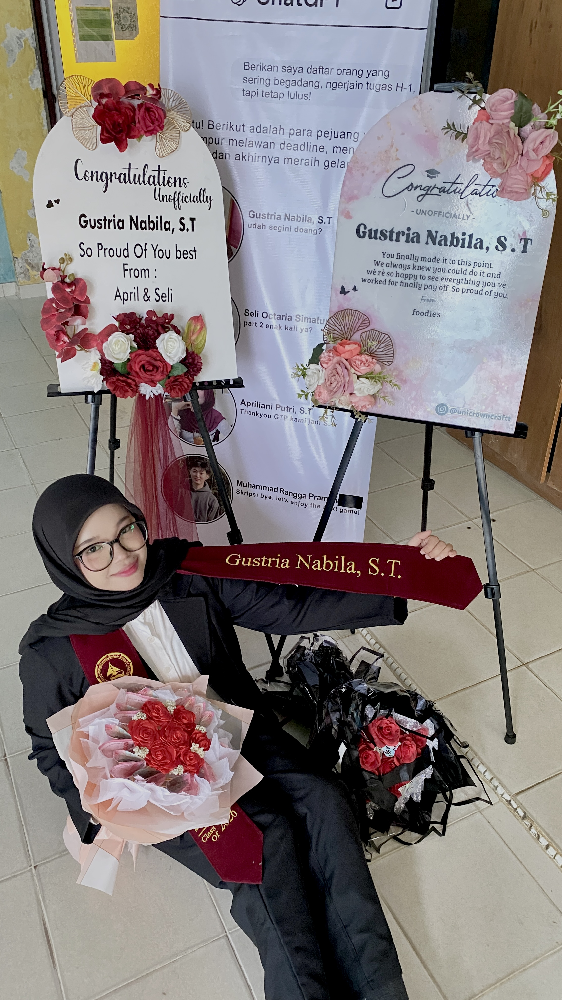
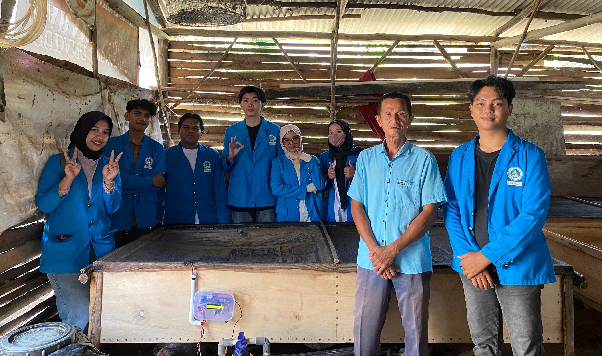
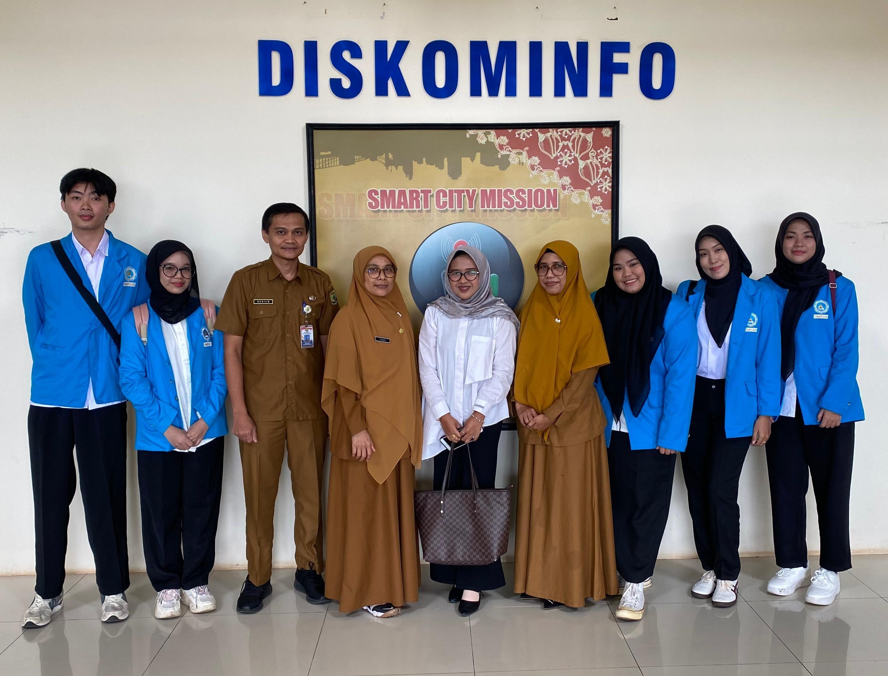
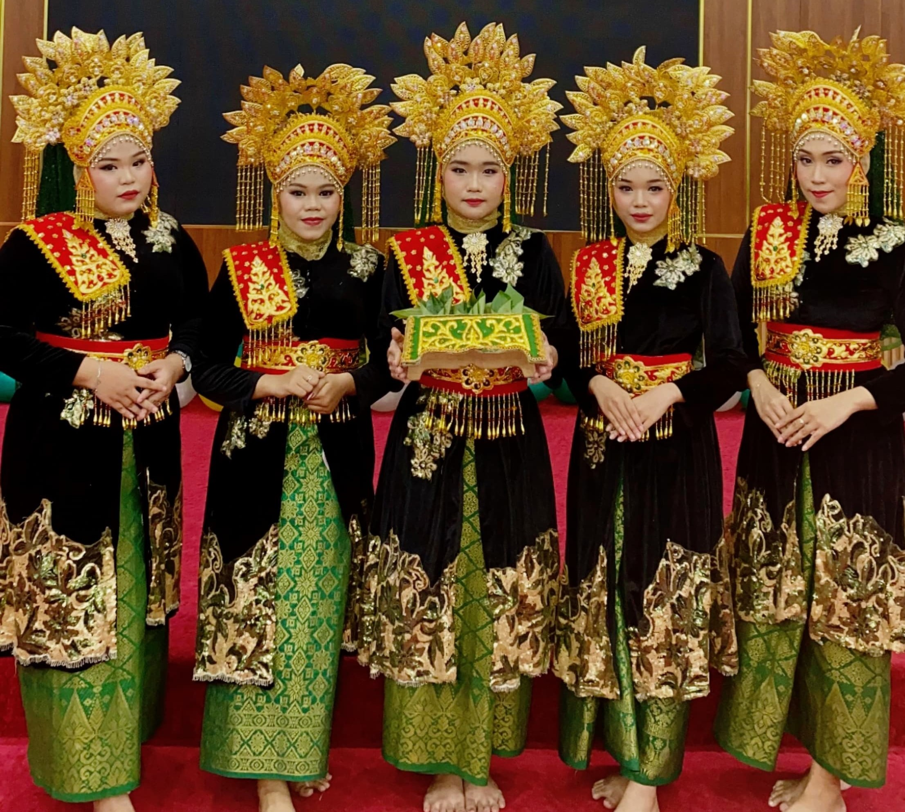

Pada mata kuliah Perancangan Analisis Algoritma, saya bersama tim mengembangkan program dengan pendekatan Case-Based Method untuk mendesain Kota IKN (Ibu Kota Nusantara). Program ini dibangun dengan Python, memakai library Tkinter dan Pillow.
Hai, saya Gustria Nabila
Mahasiswa Teknik Informatika yang tertarik pada teknologi, desain, dan pengembangan perangkat lunak.

Biodata
Saya Gustria Nabila, mahasiswa Teknik Informatika yang tertarik pada UI/UX, teknologi, serta komunikasi dan kehumasan. Latar belakang teknologi membuat saya terbiasa berpikir terstruktur, analitis, dan kreatif saat menyelesaikan masalah.
Saya mampu merancang antarmuka dan pengalaman pengguna, membuat desain visual dan konten digital, serta membangun website. Pengalaman di bidang kehumasan melatih saya menulis berita dan caption, merencanakan konten, mempublikasikan informasi, dan mendokumentasikan kegiatan.
Bagi saya, teknologi, desain, dan komunikasi saling melengkapi. Saya menikmati proses mengubah ide atau informasi menjadi sesuatu yang menarik, mudah dipahami, dan sesuai kebutuhan pengguna.
Pendidikan
Universitas Maritim Raja Ali Haji
2022 – 2026Program Studi Teknik Informatika
SMA Negeri 1 Ranai
2019 – 2022Jurusan IPA
SMP Negeri 1 Ranai
2016 – 2019SDN 001 Ranai
2010 – 2016TK Muslimah NU
2009 – 2010Keahlian
Keahlian teknis
HTML
98%CSS
96%JavaScript
93%PHP
95%Python
91%Figma
94%Canva
97%VS Code
92%GitHub
90%Microsoft Word
95%Microsoft Excel
90%Microsoft PowerPoint
95%Teknologi lain
Laravel
React
Node.js
MySQL
Flutter
C++
Soft skill
Kerja sama tim
Komunikasi
Penulisan berita
Desain UI/UX
Perencanaan konten
Dokumentasi kegiatan
Pemecahan masalah
Proyek
Pada mata kuliah Grafika Komputer, saya bersama tim mengembangkan proyek 3D World Design dengan API OpenGL. Proyek ini dibuat dengan C++ di Visual Studio 2022, dan menghasilkan dunia virtual tiga dimensi dengan berbagai objek, tekstur, dan efek pencahayaan.
Pada mata kuliah Masyarakat Cerdas, saya dan tim membuat sistem Monitoring Suhu dan Kelembaban pada Budidaya Jangkrik dengan platform Blynk IoT. Pemantauan berjalan real-time lewat aplikasi smartphone dan terhubung dengan berbagai sensor serta modul komunikasi.
Pada mata kuliah Sistem Terdistribusi, saya dan tim membuat platform pengeditan dokumen kolaboratif real-time yang menjaga sinkronisasi dan konsistensi. Aplikasi ini dibangun dengan ReactJS, TailwindCSS, ExpressJS, MongoDB, dan React Quill.
Pada mata kuliah Perancangan dan Implementasi Perangkat Lunak, saya dan tim menyusun spesifikasi kebutuhan dan membangun website pembelian produk pertanian desa. Frontend memakai HTML, CSS, dan JavaScript; backend memakai PHP dan Node.js dengan MySQL.
Pada mata kuliah Pemrograman Mobile, saya dan tim mengembangkan game edukatif Petualangan Si Rupi: Misi Menjaga Rupiah dengan Flutter SDK. Satu basis kode berjalan di Android dan iOS, dengan Dart untuk logika permainan, animasi, dan alur aplikasi.
Pada mata kuliah Manajemen Proyek Perangkat Lunak, saya dan tim mengembangkan aplikasi absensi magang berbasis Android. Fitur GPS dan kamera memastikan kehadiran peserta magang di lokasi yang ditentukan secara akurat dan real-time.
Pada mata kuliah Interaksi Manusia dan Komputer, saya dan tim membuat website Maritime Express dengan HTML, CSS, dan JavaScript. Website ini memberi pengalaman pengguna yang informatif dan responsif untuk layanan ekspedisi pengiriman barang.
Pada Kerja Praktik, saya dan tim membuat proyek Implementasi Single Sign-On (SSO) Menggunakan Laravel dan OAuth2 di Dinas Komunikasi dan Informatika Kota Tanjungpinang. Pengguna bisa mengakses berbagai aplikasi internal dengan sekali login yang aman dan efisien.
Pengalaman

Masyarakat Cerdas · ketuk untuk membacaPada mata kuliah Masyarakat Cerdas, saya bersama tim melakukan kegiatan lapangan di Desa Toapaya dan mengembangkan proyek "Monitoring Suhu dan Kelembaban pada Budidaya Jangkrik melalui Platform Blynk IoT".

Kerja Praktik · ketuk untuk membacaPada Kerja Praktik di Diskominfo Tanjungpinang, saya mengerjakan proyek "Implementasi SSO Menggunakan Laravel dan OAuth 2.0".

HUT Teknik Informatika · ketuk untuk membacaPada HUT Teknik Informatika 2024, saya tampil membawakan Tari Persembahan sebagai kontribusi seni budaya kampus.